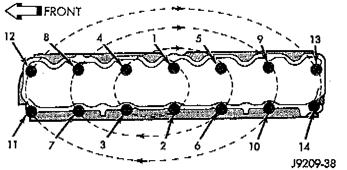

Installation

NOTES:
^ The engine cylinder head gasket is a composition gasket. The gasket is to be installed DRY. DO NOT use a gasket sealing compound on the gasket.
^ If the engine cylinder head is to be replaced and the original valves used, measure the valve stem diameter. Only standard size valves can be used with a service replacement engine cylinder head unless the replacement head valve stem guide bores are reamed to accommodate oversize valve stems. Remove all carbon buildup and reface the valves.
1. Remove the shop towels from the cylinder bores. Coat the bores with clean engine oil.
2. Position the engine cylinder head gasket (with the numbers facing up) using the alignment dowels in the cylinder block, to position the gasket.
CAUTION: Engine cylinder head bolts should be reused only once. Replace the head bolts if they were used before or if they have a paint dab on the top of the bolt.
3. With bolt No.14 held in place (tape around bolt), install the engine cylinder head over the same dowels used to locate the gasket. Remove the tape from bolt No.14.
4. Coat the threads of stud bolt No.11 with Loctite 592 sealant, or equivalent.
5. Tighten the engine cylinder head bolts in sequence according to the following procedure.
CAUTION: During the final tightening sequence, bolt No.11 will be tightened to a lower torque than the rest of the bolts. DO NOT overtighten bolt No.11.
a. Tighten all bolts in sequence (1 through 14) to 30 Nm (22 ft. lbs.) torque.
b. Tighten all bolts in sequence (1 through 14) to 61 Nm (45 ft. lbs.) torque.
c. Check all bolts to verify they are set to 61 Nm (45 ft. lbs.) torque.
d. Tighten bolts in sequence:
^ Bolts 1 through 10 to 149 Nm (110 ft. lbs.) torque.
^ Bolt 11 to 13 Nm (100 ft. lbs.) torque.
^ Bolts 12 through 14 to 149 Nm (110 ft. lbs.) torque.
Cylinder Head Bolts Description
^ Bolts 1,4,5,12,13 use a 1/2 inch-13 bolt.
^ Bolts 8,9 use a 1/2 inch-13 bolt with dowel point.
^ Bolts 2,3,6,7,10,11,14 use a 1/2 inch-13 with 7/16 inch-14 stud end.
NOTE: All bolts are 12 point drives for rocker cover clearance.
e. Check all bolts in sequence to verify the correct torque.
f. If not already done, clean and mark each bolt with a dab of paint after tightening. Should you encounter bolts which were painted in an earlier service operation, replace them.
6. Install the ignition coil and bracket assembly.
7. Connect the temperature sending unit wire connector.
8. Install the spark plugs and tighten to 37 Nm (27 ft. lbs.) torque. Connect the ignition wires.
9. Install the intake and engine exhaust manifolds.
10. Install the fuel lines and the vacuum advance hose.
11. If equipped, attach the power steering pump and bracket.
12. Install the push rods, rocker arms, pivots and bridges in the order they were removed.
13. Install the engine cylinder head cover.
14. Attach the air conditioner compressor mounting bracket to the engine cylinder head and block. Tighten the bolts to 40 Nm (30 ft. lbs.) torque.
15. Attach the air conditioning compressor to the bracket. Tighten the bolts to 27 Nm (20 ft. lbs.) torque.
CAUTION: The serpentine drive belt must be routed correctly. Incorrect routing can cause the water pump to turn in the opposite direction causing the engine to overheat.
16. Install the serpentine drive belt and correctly tension the belt.
17. Install the air cleaner and ducting.
18. Install the engine cylinder head cover.
19. Connect the hoses to the engine thermostat housing and fill the cooling system to the specified level. Refer to Cooling System.
20. The automatic transmission throttle linkage and cable must be adjusted after completing the engine cylinder head installation. Refer to Transmission and Drivetrain.
21. Install the temperature sending unit and connect the wire connector.
22. Connect the fuel line.
23. If equipped with air conditioning, install air compressor and charge A/C system. Refer to Heating and Air Conditioning.
24. Connect negative cable to battery.
25. Connect the upper radiator hose and heater hose at the engine thermostat housing.
26. Fill the cooling system. Check for leaks.
WARNING: USE EXTREME CAUTION WHEN THE ENGINE IS OPERATING. DO NOT STAND IN DIRECT LINE WITH THE FAN. DO NOT PUT HANDS NEAR THE PULLEYS, BELTS OR FAN. DO NOT WEAR LOOSE CLOTHING.
27. Operate the engine with the radiator cap off. Inspect for leaks and continue operating the engine until the engine thermostat opens. Add coolant, if required.